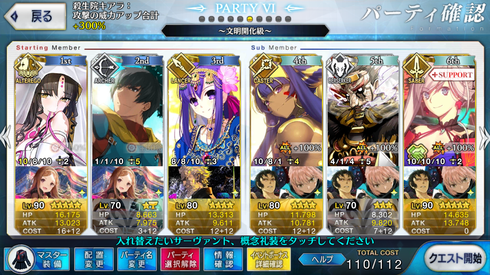

【FGO】復刻：ぐだぐだ明治維新 ライト版 ぐだぐだ掃討戦 文明開化級
この記事ではFGOイベントの周回を扱います。
編成画像にて最終再臨絵のネタバレがあるのでご注意を
基本方針
- 3T周回する
- 可能な限りドロップ追加礼装を搭載する
ドロップアイテム
- 呪獣胆石
- 狂の秘石
- 狂の輝石
エネミー構成
- ノブ系（狂）
- 山くじら（巨大イノシシ）
- 謎の長宗我部ヒロインX
- からくりバベジン
編成例

オダチェンなし
凸壬生狼3枚ないと3wで火力が足りなくなる
パールヴァティーで宝具→女神の恩恵をアーラシュにかけてステラ→キアラとニトクリスで宝具
ニトクリスがいるため、キアラの千里眼（獣）はバベジンにかけておく
周回用キャラ選別
アーラシュ/ニトクリス
いつもの便利な二人
1～2wは相手がバーサーカーのため、スパルタクスは相性があまり良くない
2wの相手はHPが高く、壬生狼を一定数積んでいかなければ安定しない
筆者のLv70アーラシュでは凸壬生狼2枚だと山くじらを撃ち漏らす（ただし、バーサーカーのため追撃でどうとでもなる）
ニトクリスは言うまでもなく、自前でNPを100にできるため、壬生狼の搭載数を増やしやすくなる
殺生院キアラ
3w全員に攻撃有利が取れ、なおかつ自前でNPを50チャージできる唯一のサーヴァント
ただし、本人の火力はそこまで高くないため、単独で3wを片付けるのは難しい
茶々
3w担当候補
自前でNPを10ずつ獲得できるが、3T周回では実質+20止まり
凸日輪城を装備していればその時点で60。あと40をなんとかする必要がある
孔明を横に立たせるか、マーリン、エレナ、魔術協会礼装によるサポートを受けるか、選択肢は少なくない
NP供給役
マーリン、孔明などのバフ役、エレナ、パールヴァティーなどの自らも全体攻撃宝具を持つ掃討役のどちらを選ぶかは編成次第
エレナはバフも持っており、イベント特攻もあるため非常に優秀
ただしパールヴァティーは女神の恩恵さえ鍛えておけば宝具含め、NP付与の全体量が多い
凸日輪城の初期NPが40であるため、自前でNPを30獲得できるアーラシュなどと合わせて宝具を撃たせられるのはパールヴァティーのほう
シェイクスピアも一応自前の攻撃宝具を持っているが、火力的に1w以外担当できそうになく、NP付与対象が単体のため全体量としてやや物足りない